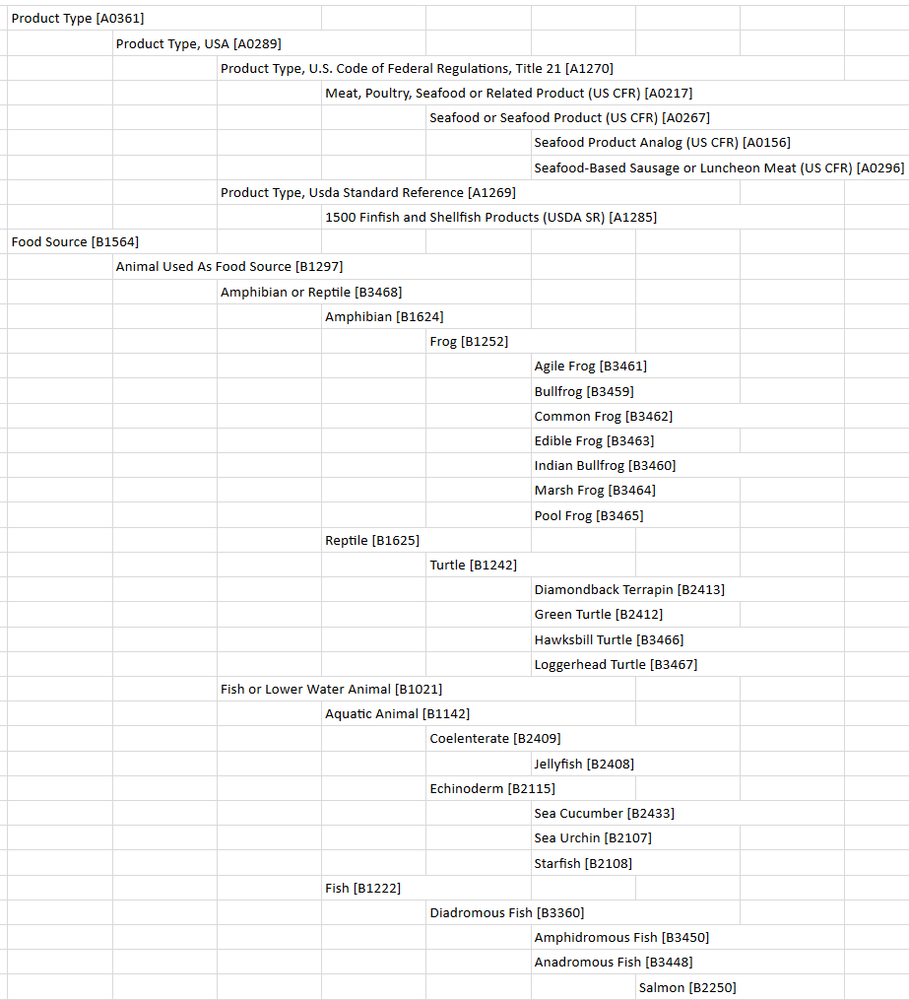

Fish¶
Intro text here; fishing zones
Table of Contents¶
Fish Taxonomy¶
Fish and Fisheries¶
Acadian Redfish from Gulf of Maine and Georges Bank
Alaska Plaice from Bering Sea and Aleutian Islands
Alaska Pollock from Aleutian Islands
Alaska Pollock from E Bering Sea
Alaska Pollock from Gulf of Alaska
American Angler from Northern Stock
American Angler from Southern Stock
American Cupped Oyster from NW Gulf of Mexico
American Sea Scallop from US Atlantic
American Yellow Perch from Lake Erie
Arrow-Tooth Flounder from Bering Sea and Aleutian Islands
Arrow-Tooth Flounder from Gulf of Alaska
Arrow-Tooth Flounder from US West Coast
Atlantic Bay Scallop from New England
Atlantic Cod from Georges Bank
Atlantic Cod from Gulf of Maine
Atlantic Deep-Sea Red Crab from Atlantic
Atlantic Halibut from Gulf of Maine and Georges Bank
Atlantic Mackerel from NW Atlantic
Atlantic Menhaden from NW Atlantic
Atlantic Spanish Mackerel from Western Atlantic
Atlantic Surfclam from NW Atlantic
Atlantic White Hake from Gulf of Maine and Georges Bank
Bigeye Tuna from Western and Central Pacific
Black Grouper from Gulf of Mexico
Black Seabass from Northern Stock
Blue Crab from Eastern Gulf of Mexico
Calico Scallop from US South Atlantic
Caribbean Spiny Lobster from Western Central Atlantic
Chilipepper Rockfish from US West Coast
Chinook Salmon from East Pacific: Alaska
Chinook Salmon from East Pacific: Annette Islands Reserve Alaska
Chinook Salmon from East Pacific: Arctic-Yukon-Kuskokwim Alaska
Chinook Salmon from East Pacific: Bristol Bay Alaska
Chinook Salmon from East Pacific: California-Oregon-Washington
Chinook Salmon from East Pacific: Cook Inlet Alaska
Chinook Salmon from East Pacific: Copper River Alaska
Chinook Salmon from East Pacific: Southeast Alaska
Chum Salmon from East Pacific: Alaska
Chum Salmon from East Pacific: Alaska Peninsula, Aleutian Islands and Chignik
Chum Salmon from East Pacific: Annette Islands Reserve Alaska
Chum Salmon from East Pacific: Arctic-Yukon-Kuskokwim Alaska
Chum Salmon from East Pacific: Bristol Bay Alaska
Chum Salmon from East Pacific: Cook Inlet Alaska
Chum Salmon from East Pacific: Kodiak
Chum Salmon from East Pacific: Prince William Sound Alaska
Chum Salmon from East Pacific: Southeast Alaska
Cobia from US South Atlantic and Gulf of Mexico
Coho Salmon from East Pacific: Alaska
Coho Salmon from East Pacific: Annette Islands Reserve Alaska
Coho Salmon from East Pacific: Arctic-Yukon-Kuskokwim Alaska
Coho Salmon from East Pacific: Bristol Bay Alaska
Coho Salmon from East Pacific: California-Oregon-Washington
Coho Salmon from East Pacific: Cook Inlet Alaska
Coho Salmon from East Pacific: Copper-Bering Alaska
Coho Salmon from East Pacific: Prince William Sound Alaska
Coho Salmon from East Pacific: Southeast Alaska
Coho Salmon from East Pacific: Westward Alaska
Dover Sole from US Pacific Coast
Dungeness Crab from Coastal Pacific
Flathead Sole from Bering Sea and Aleutian Islands
Flathead Sole from Gulf of Alaska
Florida Pompano from Atlantic Coast of Florida
Florida Pompano from Gulf of Mexico Coast of Florida
Gag Grouper from Gulf of Mexico
Golden King Crab from Aleutian Islands
Golden King Crab from Pribilof Islands
Greater Amberjack from Atlantic
Greenland Halibut from E Bering Sea
Grey Snapper from Gulf of Mexico
Gulf Menhaden from Gulf of Mexico
Jonah Crab from Stock Units Undefined
Kamchatka Flounder from Bering Sea and Aleutian Islands
King Mackerel from Gulf of Mexico
King Mackerel from US South Atlantic
Longfin Squid from NW Atlantic
Longnose Skate from US West Coast
Longspine Thornyhead from US West Coast
Mahi-Mahi from Western and Central Pacific
Mutton Snapper from US South Atlantic and Gulf of Mexico
North Pacific Hake from West Coast USA and Canada
Northern Brown Shrimp from Gulf of Mexico
Northern Brown Shrimp from NW Atlantic
Northern Pink Shrimp from Gulf of Mexico
Northern Pink Shrimp from NW Atlantic
Northern Quahog from Stock Units Undefined
Northern Red Snapper from Gulf of Mexico
Northern Rock Sole from Gulf of Alaska
Northern White Shrimp from Gulf of Mexico
Northern White Shrimp from NW Atlantic
Ocean Quahog from Gulf of Maine
Opalescent Inshore Squid from Stock Units Undefined
Pacific Cod from Bering Sea and Aleutian Islands
Pacific Cod from Gulf of Alaska
Pacific Halibut from Northeast Pacific
Pacific Halibut from US North Pacific
Pacific Ocean Perch from Bering Sea and Aleutian Islands
Pacific Ocean Perch from Gulf of Alaska
Petrale Sole from Northeast Pacific
Picked Dogfish from US Atlantic
Pink Salmon from East Pacific: Alaska
Pink Salmon from East Pacific: Annette Islands Reserve Alaska
Pink Salmon from East Pacific: Cook Inlet Alaska
Pink Salmon from East Pacific: Norton Sound Alaska
Pink Salmon from East Pacific: Prince William Sound Alaska
Pink Salmon from East Pacific: Southeast Alaska
Pink Salmon from East Pacific: Westward Alaska
Red Grouper from Gulf of Mexico and NW Atlantic
Red King Crab from Bristol Bay
Saithe from Gulf of Maine and Georges Bank
Sand Gaper from Stock Units Undefined
Sandbar Shark from Gulf of Mexico and NW Atlantic
Sheepshead from Gulf of Mexico
Shortfin Mako from Gulf of Mexico
Shortspine Thornyhead from US West Coast
Silver Hake from US Atlantic Coast Northern
Skipjack Tuna from Western and Central Pacific
Snowy Grouper from Gulf of Mexico
Sockeye Salmon from East Pacific: Alaska
Sockeye Salmon from East Pacific: Annette Islands Reserve Alaska
Sockeye Salmon from East Pacific: Bristol Bay Alaska
Sockeye Salmon from East Pacific: Cook Inlet Alaska
Sockeye Salmon from East Pacific: Copper-Bering Alaska
Sockeye Salmon from East Pacific: Kuskokwim Alaska
Sockeye Salmon from East Pacific: Prince William Sound Alaska
Sockeye Salmon from East Pacific: Southeast Alaska
Sockeye Salmon from East Pacific: Westward Alaska
South American Pilchard from Northern
Southern Flounder from Western Central Atlantic
Southern Rock Sole from Gulf of Alaska
Spanish Mackerel from Gulf of Mexico
Spotted Weakfish from Ne Florida
Spotted Weakfish from North Carolina and Virginia
Spotted Weakfish from SE Florida
Spotted Weakfish from US Georgia
Starry Flounder from Northern Stock
Starry Flounder from Southern Stock
Swordfish from Northwest Pacific
Vermilion Snapper from Gulf of Mexico
Walleye from Lake Erie Western and Central
Whelk from Stock Units Undefined
Winter Flounder from Southern New England/Mid Atlantic
Yellowfin Sole from Bering Sea and Aleutian Islands
Yellowfin Sole from Gulf of Alaska
Yellowfin Tuna from Western and Central Pacific
Yellowtail Flounder from Southern New England/Mid Atlantic